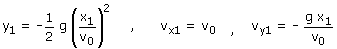
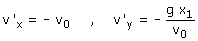
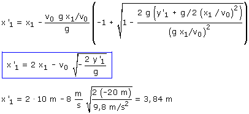
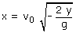
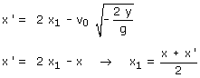

1ª parte
Calculamos donde la pelota choca con la pared y la velocidad con que lo hace:

Datos: x1 = 10 m, v0 = 8 m/s
2ª parte
Velocidad de la pelota tras el choque con la pared
En un choque oblicuo elástico la velocidad paralela a la pared (vy) se conserva y la velocidad normal (vx) se invierte:

3ª parte
Calculamos donde llega la pelota al suelo

Parámetros:

Datos y'1 = -20 m

Observación curiosa:
Comprueba tu mismo/misma que si no hubiera pared la pelota habría tocado el suelo en:

Y hemos obtenido que, tras chocar con la pared, la pelota toca el suelo en:

 |
La pared está en el punto medio entre las dos posiciones |